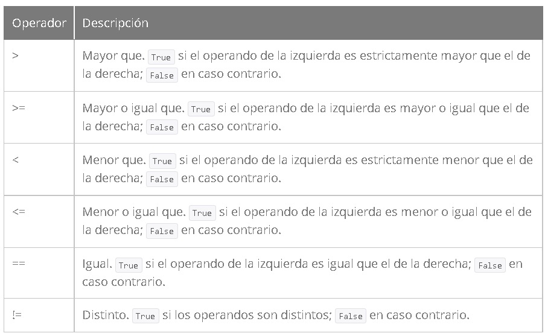
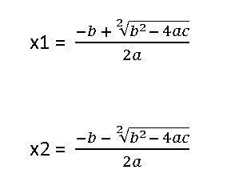

Python
Instalar Python con WSL
Instalar Python en Windows Subsystem para Linux (WSL2)
Python es un lenguaje de programación creado por Guido van Rossum a principios de los años 90 cuyo nombre está inspirado en el grupo de cómicos ingleses "Monty Python". Es un lenguaje similar a Perl, pero con una sintaxis muy limpia y que favorece un código legible.
Se trata de un lenguaje interpretado o de script, con tipado dinámico, fuertemente tipado, multiplataforma y orientado a objetos.
Características Principales
Lenguaje interpretado o de script
Un lenguaje interpretado o de script es aquel que se ejecuta utilizando un programa intermedio llamado intérprete, en lugar de compilar el código a lenguaje máquina que pueda comprender y ejecutar directamente una computadora (lenguajes compilados).
La ventaja de los lenguajes compilados es que su ejecución es más rápida. Sin embargo los lenguajes interpretados son más flexibles y más portables.
Python tiene, no obstante, muchas de las características de los lenguajes compilados, por lo que se podría decir que es semi interpretado. En Python, como en Java y muchos otros lenguajes, el código fuente se traduce a un pseudo código máquina intermedio llamado bytecode la primera vez que se ejecuta, generando archivos .pyc o .pyo (bytecode optimizado), que son los que se ejecutarán en sucesivas ocasiones.
Tipado dinámico
La característica de tipado dinámico se refiere a que no es necesario declarar el tipo de dato que va a contener una determinada variable, sino que su tipo se determinará en tiempo de ejecución según el tipo del valor al que se asigne, y el tipo de esta variable puede cambiar si se le asigna un valor de otro tipo.
Fuertemente tipado
No se permite tratar a una variable como si fuera de un tipo distinto al que tiene, es necesario convertir de forma explícita dicha variable al nuevo tipo previamente.
Multiplataforma
El intérprete de Python está disponible en multitud de plataformas (UNIX, Solaris, Linux, DOS, Windows, OS/2, Mac OS, etc.) por lo que si no utilizamos librerías específicas de cada plataforma nuestro programa podrá correr en todos estos sistemas sin grandes cambios.
Orientado a objetos
La orientación a objetos es un paradigma de programación en el que los conceptos del mundo real relevantes para nuestro problema se trasladan a clases y objetos en nuestro programa.
Tipos básicos
En Python los tipos básicos se dividen en:
Números, como pueden ser • 3 (entero), 15.57 (de coma flotante) o 7 + 5j (complejos)
Cadenas de texto, como • "Hola Mundo"
Valores booleanos: • True (cierto) y False (falso).
Ejemplos para cada tipo de variables
Para crear este ejemplo, entramos a la carpeta donde queremos crear dicho archivo. Recuerde que el archivo debe tener la extensión .py, para este caso utilizamos el nombre 01_Ejemplo.py en el editor de texto Visual Studio Code.
# esto es una cadena
c = "Hola Mundo"
# y esto es un entero
e = 23
print (c)
print (e)
# podemos comprobarlo con la función type
print (type(c))
print (type(e))
Para ejecutar este codigo, haga lo siguiente:
Forma 1: En la carpeta raiz donde se encuentra el archivo, escriba
python3 <nombreArchivo>, es decir
python3 01_Ejemplo.py
Notamos que la funcion print(nombreVariable), muestra el contenido de la variable y print(type(nombreVariable)), muestra el tipo de la variable.
Este pequeño ejemplo también nos ha servido para presentar los comentarios inline en Python: cadenas de texto que comienzan con el carácter # y que Python ignora totalmente. Hay más tipos de comentarios, de los que hablaremos más adelante.
Numeros
en Python se pueden representar números enteros, reales y complejos.
Enteros
Los números enteros son aquellos números positivos o negativos que no tienen decimales (además del cero). En Python se pueden representar mediante el tipo int (de integer, entero) o el tipo long (largo). La única diferencia es que el tipo long permite almacenar números más grandes. Es aconsejable no utilizar el tipo long a menos que sea necesario, para no malgastar memoria.
Mediante el uso de una variable de tipo int de Python podemos almacenar números de -231 a 231 - 1, o lo que es lo mismo, de -2.147.483.648 a 2.147.483.647. En plataformas de 64 bits, el rango es de -9.223.372.036.854.775.808 hasta 9.223.372.036.854.775.807.
El tipo long de Python permite almacenar números de cualquier precisión, estando limitados solo por la memoria disponible en la máquina.
# type(entero) devolvería int
entero = 23
También podemos indicar a Python que un número se almacene usando long añadiendo una L al final:
# type(entero) devolvería long
entero = 23L
El literal que se asigna a la variable también se puede expresar como un octal, anteponiendo un cero:
# 027 octal = 23 en base 10
entero = 027
o bien en hexadecimal, anteponiendo un 0x:
# 0x17 hexadecimal = 23 en base 10
entero = 0x17
Reales
Los números reales son los que tienen decimales. En Python se expresan mediante el tipo float. En otros lenguajes de programación, como C, tenemos también el tipo double, similar a float pero de mayor precisión (double = doble precisión). Python, sin embargo, implementa su tipo float a bajo nivel mediante una variable de tipo double de C, es decir, utilizando 64 bits, luego en Python siempre se utiliza doble precisión, y en concreto se sigue el estándar IEEE 754: 1 bit para el signo, 11 para el exponente, y 52 para la mantisa. Esto significa que los valores que podemos representar van desde ±2,2250738585072020 x 10-308 hasta ±1,7976931348623157×10308.
Para representar un número real en Python se escribe primero la parte entera, seguido de un punto y por último la parte decimal.
real = 0.2703
Para representar un número real en Python se escribe primero la parte entera, seguido de un punto y por último la parte decimal.
real = 0.2703
También se puede utilizar notación científica, y añadir una e (de exponente) para indicar un exponente en base 10. Por ejemplo:
real = 0.1e-3
sería equivalente a 0.1 x 10-3 = 0.1 x 0.001 = 0.0001
Complejos
Los números complejos son aquellos que tienen parte imaginaria. Si no conocías de su existencia, es más que probable que nunca lo vayas a necesitar, por lo que puedes saltarte este apartado tranquilamente. De hecho la mayor parte de lenguajes de programación carecen de este tipo, aunque sea muy utilizado por ingenieros y científicos en general.
Los números complejos en Python se representan de la siguiente forma:
complejo = 2.1 + 7.8j
Operadores
Veamos ahora qué podemos hacer con nuestros números usando los operadores por defecto. Para operaciones más complejas podemos recurrir al módulo math.
Operadores aritméticos
Puede que tengáis dudas sobre cómo funciona el operador de módulo, y cuál es la diferencia entre división y división entera.
El operador de módulo no hace otra cosa que devolvernos el resto de la división entre los dos operandos. En el ejemplo, 7/2 sería 3, con 1 de resto, luego el módulo es 1.
La diferencia entre división y división entera no es otra que la que indica su nombre. En la división el resultado que se devuelve es un número real, mientras que en la división entera el resultado que se devuelve es solo la parte entera.
Operadores Relacionales

Operadores de Asignación
Operadores Lógicos
Cadenas
Las cadenas no son más que texto encerrado entre comillas simples ('cadena') o dobles ("cadena"). Dentro de las comillas se pueden añadir caracteres especiales escapándolos con \, como \n, el carácter de nueva línea, o \t, el de tabulación.
Ejemplo:
unicode = u"äóè"
raw = r"\n"
También es posible encerrar una cadena entre triples comillas (simples o dobles). De esta forma podremos escribir el texto en varias líneas, y al imprimir la cadena, se respetarán los saltos de línea que introdujimos sin tener que recurrir al carácter \n, así como las comillas sin tener que escaparlas.
triple = """primera linea
esto se verá en otra linea"""
Las cadenas también admiten operadores como +, que funciona realizando una concatenación de las cadenas utilizadas como operandos y *, en la que se repite la cadena tantas veces como lo indique el número utilizado como segundo operando.
a = "uno"
b = "dos"
c = a + b # c es "unodos"
c = a * 3 # c es "unounouno"
Booleanos
Como decíamos al comienzo del capítulo una variable de tipo booleano sólo puede tener dos valores: True (cierto) y False (falso). Estos valores son especialmente importantes para las expresiones condicionales y los bucles, como veremos más adelante.
Entrada y Salida de Datos
- Para la entrada utilice la función input, para capturar desde el teclado el valor de una variable de forma dinamica de la siguiente manera:
base = int(input("Digite la base del triangulo "))
Para este caso particular, aparece en pantalla el mensaje que ingrese la base del triangulo y una vez que el usuario ingrese un valor, lo convierte a entero al tipo de variable que se le indique(int, long, float, double, etc). En caso que no se indique lo asignará a un tipo cadena de la siguiente maneraÑ
nombre = input("Digite el Nombre: ")
para este caso el valor diginado lo asignará a la variable nombre de tipo cadena o string.
- En cuanto a la salida utilice la función print, por ejemplo:
Forma básica:
print (c)
Para este caso, muestra el contenido de la variable \<c>.
Forma Avanzada:
print(f"El triangulo de base {base} y de altura {altura} tiene un area de {area}")
En este caso puede interpolar valores de las variables y mensajes dentro de la misma linea de salida. donde las variables se encierran entre llaves {nombreVariable}. y la función print se antepone la letra \<f>.
Actividad
-
Leer la base y la altura de un tringulo. Con estos valores , calcular el area del triangulo, cuyo resultado se obtiene de:
area = base * altura / 2
-
Leer el valor de X y calcular el resulatado de la siguiente ecuacion.
3.
Leer los valores de a, b y c. Muestre el resultado de x1 y x2, bajo la siguiente fórmula cuadrática.
